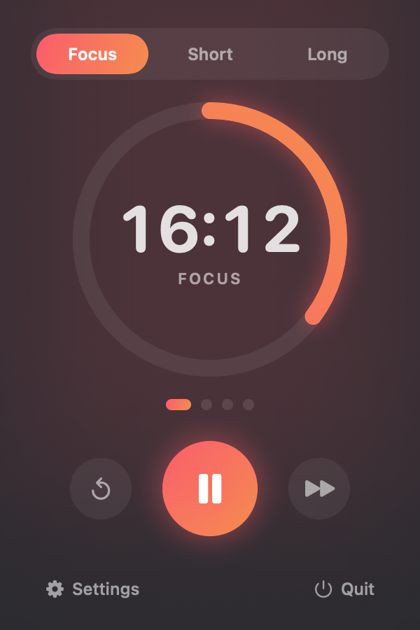

🍅
Pomodoro
A minimal, native Pomodoro timer for macOS, iPhone, and Apple Watch. Focus, break, repeat — on your menu bar, in your pocket, and on your wrist.

🖥️ Menu bar on Mac
A countdown right in your macOS menu bar — no dock icon, no window in the way.
📱 Full screen on iPhone
A focused full-screen timer with a big progress ring and one-tap session switching.
⌚ On your wrist
Start, pause, and switch sessions straight from your Apple Watch.
🔒 Live Activity & Dynamic Island
Watch the countdown on your iPhone Lock Screen and in the Dynamic Island — no need to open the app.
🔁 Focus & break cycle
Automatic focus → short break → long break, with a configurable cycle.
⏱️ Your durations
Type in exactly the minutes you want. Auto-start the next session if you like.